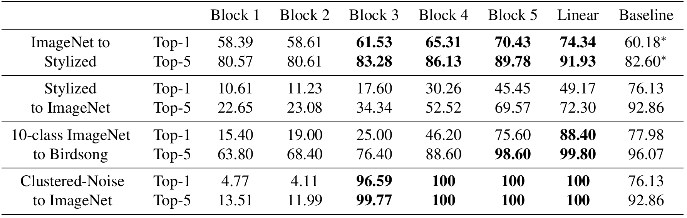
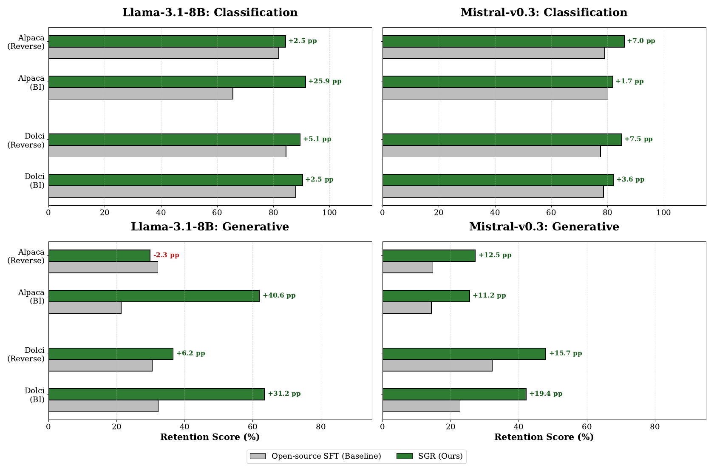
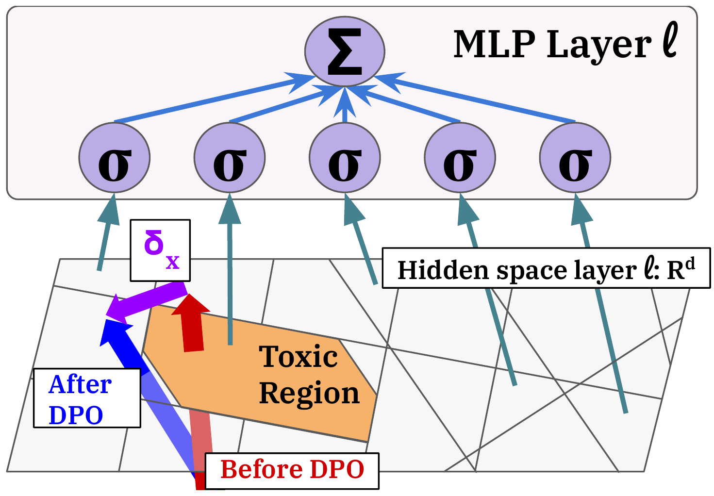
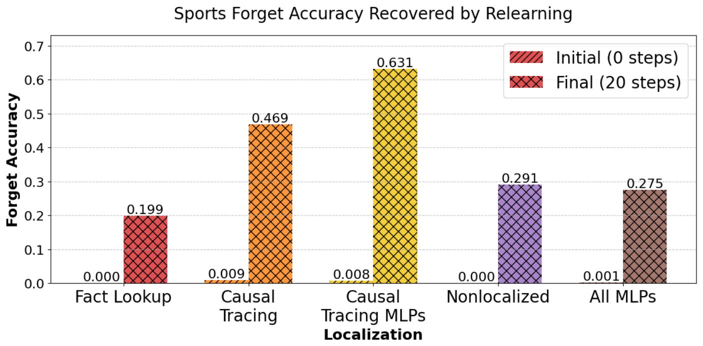
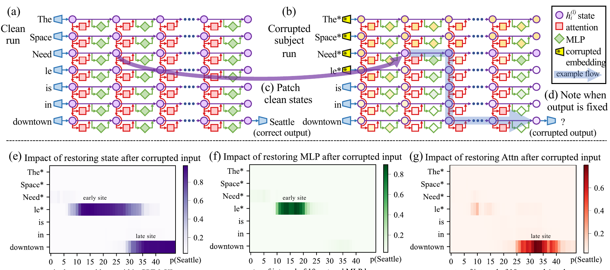
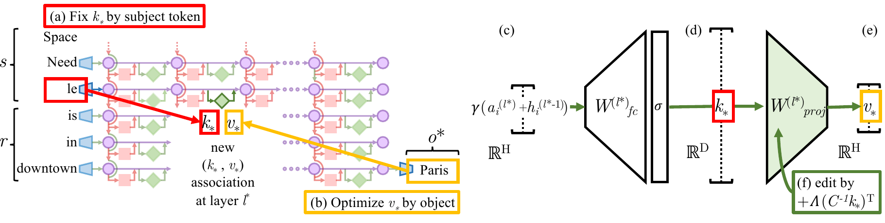
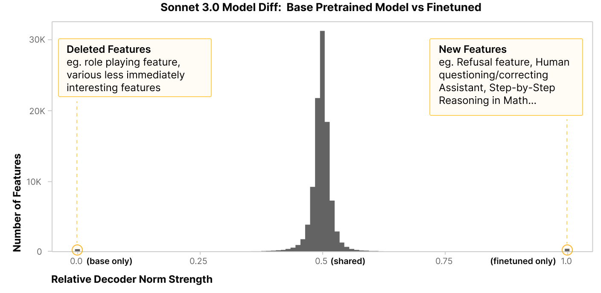
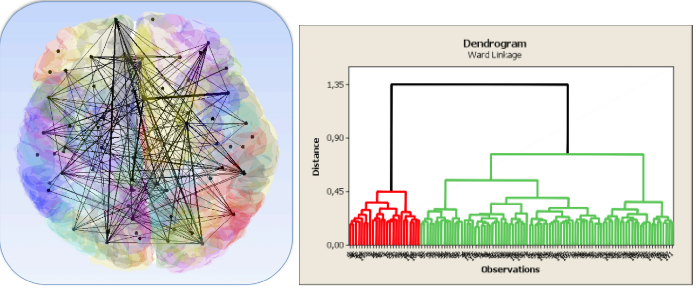
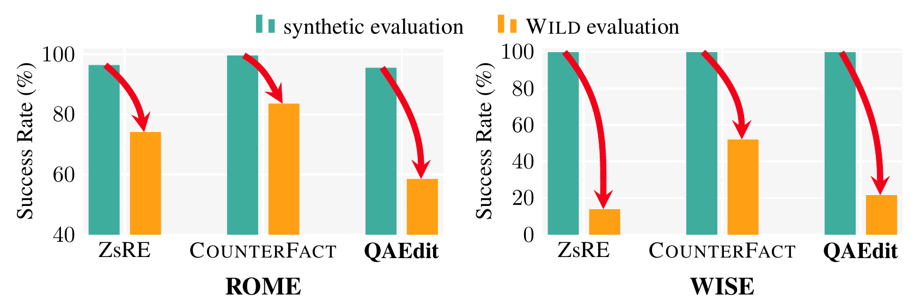
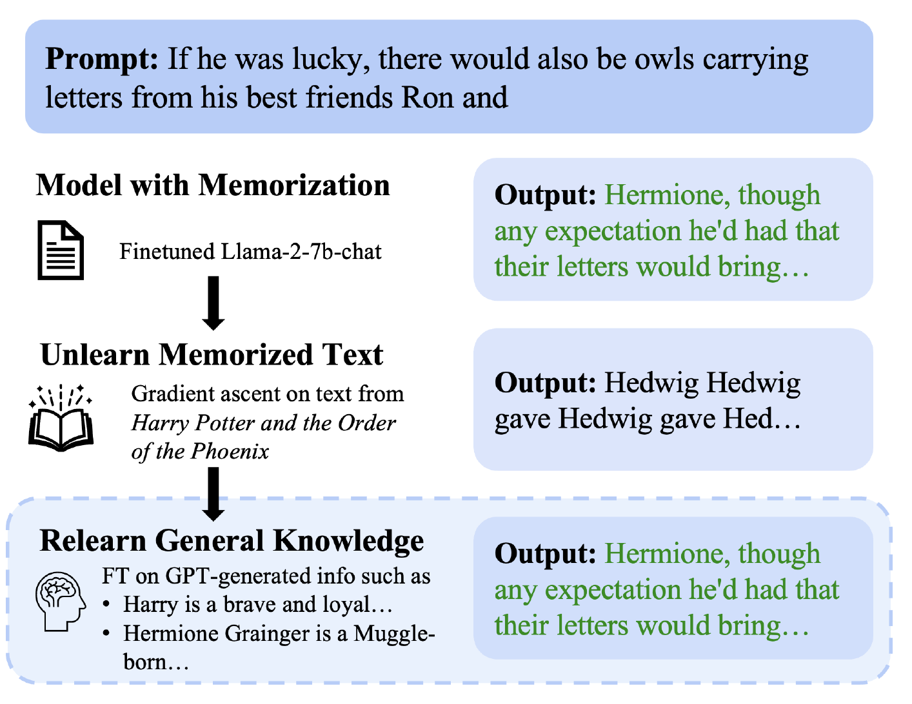

What Internal Structure Tells Us About Generative Models
Zhiqian Chen Computer Science, Rochester Institute of Technology
What is inside a language model? One shared whiteboard.
The ideaEach word is a row of numbers on one shared whiteboard. Blocks read it and write corrections back.
1 · WhiteboardThe residual stream. Copied forward block to block. What is on it: the activations.
2 · AttentionMoves information between words. "in" reads "Space" and "Needle".
3 · MLPA lookup table on each row: Space Needle, so Seattle. Its fixed numbers: the weights.
4 · Next wordThe last row is read out: Seattle. Real models repeat this block dozens of times.
Elhage et al., A Mathematical Framework for Transformer Circuits, 2021. 3D style after Bycroft, LLM Visualization (bbycroft.net/llm)
One network, five graphs
Five graphs, one network. Which one you draw depends on what change you want to understand.
A released model is not left alone. Seven kinds of surgery.
Editedrewrite one wrong fact, leave the rest
Stitchedbottom of A, top of B, one small adapter
Mergedaverage two models into one
Pruneddelete parts, see what breaks
Steereda push on the internal state at run time
Unlearnedmake it forget, or only hide?
Fine-tunedthe most common surgery of all
Every one of these is accepted by an exam that only looks at answers. And if the model is a graph, every one is a graph operation. The map next.
The map: a model is a graph, and everything else is an arrow
inspires borrows the idea · critique shows where it fails · fix repairs it · same object two fields met the same thing · complement stages of one problem · cousin nobody inspired anybody
The same papers, in time
inspirescritiquefixsame objectcomplementhover a dot for its one-line story, the big one is ours
One lane per family, one dot per paper, lines for the relations. The tools and the graph view are old (2008 to 2021). Every red line starts in 2023 or later: the field learned to change models before it learned to check what changed.
Route
Chapter
What you will be able to do afterwards
Minutes
1. Background
Say what is inside a model and why it can be read as a graph (done)
8
3. Eight families
For each: the question, the founding result, the sharpest critique, one line to remember
26
4. Three lessons
What all eight families have in common
1
5. Why a screen
The receipts: the exam passed and the inside was quietly broken
4
6. Our paper
Problem, method, numbers, limits, the closest competitors
9
7. Open problems
Five gaps a network scientist can own
2
Every family chapter has the same three beats: the question in one line with a life analogy, the founding result, the critique. The rail at the top always shows where we are.
3.1 First, how do you compare two networks at all?
Neurons do not line up across networks. Distances between inputs do.
CKA finds the matching layers. And a rule for the whole talk.
Lesson 3: needs a null model
Kornblith, Norouzi, Lee, Hinton, ICML 2019. Davari et al., ICLR 2023. Gröger et al., ICML 2026
3.1 Do independently trained models learn the same thing?
3.1 Do independently trained models learn the same thing?
Lesson 3
Same shape, different coordinates.
Li et al., Convergent Learning, ICLR 2016. Kornblith et al., ICML 2019. Huh et al., ICML 2024. Gröger et al., ICML 2026. Ainsworth et al., Git Re-Basin, ICLR 2023
3.2 Stitching: can the bottom of A drive the top of B?
3.2 Stitching: can the bottom of A drive the top of B?
One small adapter joins A to B. If it works, they speak the same internal language.
Glue two different networks with one tiny layer: they lose almost nothing.
Bansal, Nakkiran, Barak, Revisiting Model Stitching, NeurIPS 2021. Moschella et al., ICLR 2023. Chen et al., NeurIPS 2025
Critique: noise stitches perfectly
Lesson 3

100% top-1 from clustered random noise
A network that has never seen a real image still stitches into an image model perfectly. So a successful stitch does not prove the two learned the same thing.
Networks trained on birdsong, stylized images, noise
Stitched into an ImageNet model at successive blocks
Noise row: 100% after block 3. The receiver did all the work
Stitching measures compatibility, not shared information
Open: what would a measure of shared information look like?
Remember: different good networks stitch for free, and so does noise. Stitchable is not same.
Cut out a chunk of middle layers and the model barely notices, until about half is gone. Only the first and last layers are irreplaceable.
(c) deep layers barely change their input
(d) delete the most self-similar block, heal lightly: QA flat until about half is gone
Sun 2025: middle layers can be skipped or shuffled, ends cannot
Graph reading: hubs at both ends, permutation-tolerant middle
Gromov et al., The Unreasonable Ineffectiveness of the Deeper Layers, ICLR 2025, Figure 1
Critique: reasoning died quietly
Lesson 2

Certified by multiple choice, broken on procedures
The pruned model still picks the right answer from a list, but can no longer carry out a multi-step calculation. Multiple-choice exams never asked it to.
Same 25% pruning, classification keeps 80 to 90%
Math (GSM8K) and code (HumanEval) drop hard
Recovery fine-tuning restores classification, not reasoning
Garcia 2026: two definitions of "redundant" disagree at 8B
Open: an internal signal that says which deletions were safe, before the expensive test
Remember: most weights can go, the surviving heads have jobs, and "fine" depends on the test you run.
Shrestha et al., On the Limits of Layer Pruning for Generative Reasoning, 2026, Figure 1
3.5 Steering: change the state, not the weights
3.5 Steering: change the state, not the weights
Do not change the model. Push its internal state while it runs.
Zou et al., Representation Engineering, 2023. Rimsky et al., Steering Llama 2 via Contrastive Activation Addition, ACL 2024
Key result: one direction controls refusal
Lesson 1
Arditi et al., Refusal in Language Models Is Mediated by a Single Direction, NeurIPS 2024, Figure 1. Xu et al., ACL 2026
Critique: reliable on average, not per input
Tan et al., Analysing the Generalisation and Reliability of Steering Vectors, NeurIPS 2024, Figure 1. Wollschlager et al. 2025. Wu et al. 2025
3.6 Fine-tuning and unlearning: routed around, not replaced
3.6 Fine-tuning and unlearning: routed around, not replaced
Fine-tuning routes around the old. Unlearning hides, it does not delete.
Hu et al., LoRA, ICLR 2022. Jang et al., Knowledge Unlearning, ACL 2023. Prakash et al., ICLR 2024. Lee et al., ICML 2024
Key result: bypass, and the before/after difference is readable
Lesson 2

Bypassed, not deleted
Safety training did not remove the toxic circuit, it taught the model to walk around it. And the before-versus-after difference still shows what the training was about.
After DPO the toxic region is still there, activations route around it
One simple intervention brings toxicity back
Minder 2026: base-vs-fine-tuned activation deltas reveal what the fine-tune was about, even on unrelated text
Li 2024 (WMDP): unlearning by steering, benchmark says clean success
The before/after delta carries readable signal. That is the premise of our paper.
Lee et al., A Mechanistic Understanding of Alignment Algorithms, ICML 2024, Figure 3
Critique and constructive answer: suppressed, not forgotten
Lesson 2

0.20 vs 0.47 to 0.63 recovered
"Forgotten" knowledge comes back after a little unrelated training, unless the unlearning targeted the exact circuit that stores it.
Hu 2025: a harmless fine-tune restores "forgotten" knowledge
Also restored by quantization, hidden-state probes, adaptive attacks
Guo 2025: aim unlearning at the mechanistically located circuit and it resists relearning
Output-based localization: 0.47 to 0.63 comes back. Mechanistic: 0.20
Open: a cheap internal signal that separates suppression from removal
Remember: updates hide old behavior rather than delete it, and which structure you touch decides whether the change survives.
Guo et al., Mechanistic Unlearning, ICML 2025, Figure 6
3.7 Knowledge editing: the smallest change there is
3.7 Knowledge editing: the smallest change there is
Fix one wrong fact, no retraining. Leave everything else alone.
Geva et al., Feed-Forward Layers Are Key-Value Memories, EMNLP 2021. Meng, Bau, Andonian, Belinkov, Locating and Editing Factual Associations in GPT, NeurIPS 2022
Founding: where a fact lives. Break it, then restore one piece at a time

a. clean run: "Seattle"
b. noise on the subject: answer gone
c, d. restore one state, test
e. all positions: two dark spots
f. MLP only: early site. g. attention only: late site
Break it, then restore one piece at a time
Break the model on purpose, repair one position at a time. The position whose repair brings the answer back is where the knowledge sits.
a Clean run says "Seattle". Every internal state is recorded
b Noise on the subject words. The answer disappears
c, d Put one clean state back, keep the rest broken, measure how much "Seattle" returns
e Repeat for every layer (columns) and word (rows). Dark = repair here restores the answer. Early site: subject word, mid layers. Late site: last word, deep layers
f, g MLP only (the lookup blocks): the early site stays. Attention only (the blocks that move information between words): the late site stays
Conclusion. Two jobs in two places: mid-layer MLPs at the subject look the fact up (librarian at the shelf), deep-layer attention at the last word carries it to the output (runner to the desk). Editing a fact means changing the shelf.
Meng, Bau, Andonian, Belinkov, Locating and Editing Factual Associations in GPT, NeurIPS 2022, Figure 1
Founding: how ROME rewrites the fact

Overwrite one entry with a rank-one update
The MLP is a lookup table: subject in, fact out. Store a new key and value with one small weight change.
(a) key: what the MLP sees at the subject's last word
(b) value: tuned until the model says "Paris"
(c to e) first matrix makes the key, second maps key to value
(f) add one rank-one term to the second matrix. Closed form, no retraining
MEMIT spreads thousands of facts over several layers. AlphaEdit protects old facts
Remember: one fact, one layer, one closed-form change. The cracks come next.
Meng, Bau, Andonian, Belinkov, Locating and Editing Factual Associations in GPT, NeurIPS 2022, Figure 4
The first crack: where a fact lives is not where editing works
Lesson 2
Hase, Bansal, Kim, Ghandeharioun, Does Localization Inform Editing?, NeurIPS 2023. Guo et al., ICML 2025
3.8 Model diffing: compare a model with its earlier self
3.8 Model diffing: compare a model with its earlier self
What did a model gain inside since last month, and what did it lose?
Lindsey et al., Sparse Crosscoders for Cross-Layer Features and Model Diffing, 2024. Koutra, Vogelstein, Faloutsos, DeltaCon, SDM 2013
Key results: what died, what was born, and same score, different delta

How to read: one bar = how many features sit at that position. Across: 0 = only in the model before the update, 0.5 = shared by both, 1 = only after. A feature is one concept the model uses (role play, refusal, step-by-step math).
The few changes say what the update did
Most features are shared. The few that die or are born say exactly what the update did, including what nobody asked for. A score cannot show this.
Crosscoder (Lindsey 2024): one dictionary of features read from both models at once
Born: refusal, correcting the assistant, step-by-step math. Died: role play, which nobody meant to remove
Same score, different delta (Shuttleworth 2025): LoRA and full fine-tuning tie on score, but LoRA adds new directions that drive forgetting
Duan 2026: probes break after updates, so every update needs rechecking
Lindsey et al., Sparse Crosscoders for Cross-Layer Features and Model Diffing, 2024. Shuttleworth et al., 2025. Duan et al., 2026
Critique of the tools, and the graph ancestor

The ancestor compared brains in 2013
Even the diffing tools can invent differences, so the comparison itself needs checking. Network science solved "compare two graphs on the same nodes" back in 2013.
Minder 2025: crosscoder artifacts can fake a diff signal
Kempf 2026: is white-box diffing worth its cost?
DeltaCon (this figure): two graphs on the same nodes, hubs weighted more, with attribution
Ours: a diff in the space of activation graphs, no dictionary to train
Remember: model diffing got its name in 2024, same score can hide a different delta, and DeltaCon already knew how to say which nodes moved.
Ilharco et al., ICLR 2023. Meng et al., NeurIPS 2022. Arditi et al., NeurIPS 2024. Lee et al., ICML 2024. Hu et al., ICLR 2025. Hammoud et al., EMNLP Findings 2024. Kornblith et al., ICML 2019. Smith et al., ICML 2025. Gröger et al., ICML 2026
5. The exam every surgery must pass is a sample
A benchmark is a set of questions. "Passed" means "passed what we thought to ask."
5. Why we need a cheap screen
Every surgery is accepted by an exam that only looks at answers.
The whole field in one story
A large model is trained once, then changed over and over after release.
A quick bet
What fraction of "perfect" edits fail on a new wording?
Benbrahim, Goghrod, Rashme, Ji, Fu, Zhang, Chen. Delta-Graph Signatures for Post-Edit Risk Screening in Knowledge Editing. SDM 2026
Four receipts: the exam said pass

Editing. 96.8% success when the model is fed the correct prefix word by word (teacher forcing), 38.5% when it writes freely. The test was measuring the test. Yang 2025

Unlearning. Harry Potter "forgotten". A little fine-tuning on harmless general text and the original comes back word for word. Hu 2025
Merging. A safe chemistry expert averaged with an unsafe math expert passes every capability benchmark and inherits the unsafe behavior. Hammoud 2024
Pruning. A quarter of the layers removed and repaired: classification keeps 80 to 90%, math and code generation drop hard and do not come back. Shrestha 2026
Same shape every time: the benchmark passed, a side effect hid, and only a different, costlier test found it. Can an internal signal find it first?
What is a delta graph?
Ask the same questions before and after an edit, and see how the model's parts now work together differently.